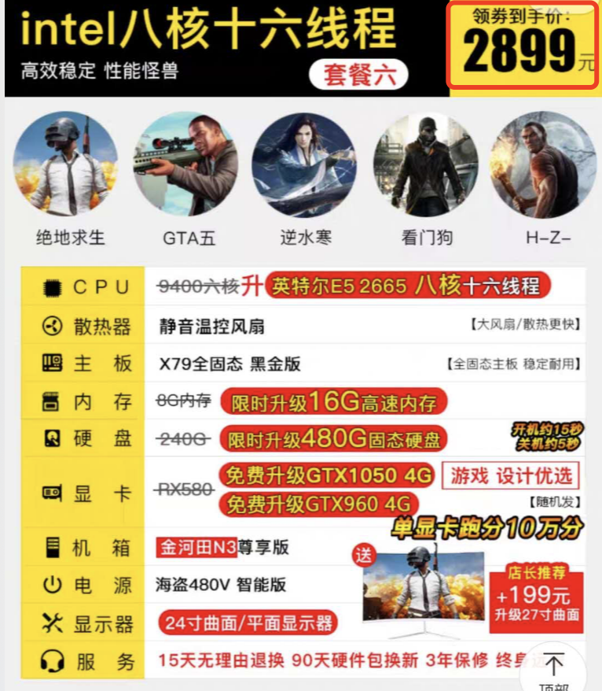

<!DOCTYPE html>


<html lang="zh-CN">


<head>
  <meta charset="utf-8" />
    
  <meta name="viewport" content="width=device-width, initial-scale=1, maximum-scale=1" />
  <title>
    DIY-PC 两三事 |  
  </title>
  <meta name="generator" content="hexo-theme-ayer">
  
  <link rel="shortcut icon" href="/favicon.ico" />
  
  
<link rel="stylesheet" href="/dist/main.css">

  
<link rel="stylesheet" href="https://cdn.jsdelivr.net/gh/Shen-Yu/cdn/css/remixicon.min.css">

  
<link rel="stylesheet" href="/css/custom.css">

  
  
<script src="https://cdn.jsdelivr.net/npm/pace-js@1.0.2/pace.min.js"></script>

  
  

  

</head>

</html>

<body>
  <div id="app">
    
      
    <main class="content on">
      <section class="outer">
  <article
  id="post-tips-diy-pc"
  class="article article-type-post"
  itemscope
  itemprop="blogPost"
  data-scroll-reveal
>
  <div class="article-inner">
    
    <header class="article-header">
       
<h1 class="article-title sea-center" style="border-left:0" itemprop="name">
  DIY-PC 两三事
</h1>
 

    </header>
     
    <div class="article-meta">
      <a href="/2020/10/tips-diy-pc/" class="article-date">
  <time datetime="2020-10-09T14:14:12.000Z" itemprop="datePublished">2020-10-09</time>
</a> 
  <div class="article-category">
    <a class="article-category-link" href="/categories/%E6%9D%82%E8%AE%B0/">杂记</a>
  </div>
  
<div class="word_count">
    <span class="post-time">
        <span class="post-meta-item-icon">
            <i class="ri-quill-pen-line"></i>
            <span class="post-meta-item-text"> 字数统计:</span>
            <span class="post-count">3.1k</span>
        </span>
    </span>

    <span class="post-time">
        &nbsp; | &nbsp;
        <span class="post-meta-item-icon">
            <i class="ri-book-open-line"></i>
            <span class="post-meta-item-text"> 阅读时长≈</span>
            <span class="post-count">11 分钟</span>
        </span>
    </span>
</div>
 
    </div>
      
    <div class="tocbot"></div>


  
    <div class="article-entry" itemprop="articleBody">
       
  <h1 id="前言"><a href="#前言" class="headerlink" title="前言"></a>前言</h1><blockquote>
<p>本文主要是一些DIY硬件的技术参数释意, 也是自己的diy避坑之路</p>
</blockquote>
<p>每个男孩子上学时的梦, 是天天和下图的这些待在一起, 能抱回家更是美滋滋.</p>
<p></p>
<p>说的当然不是妹子, 是说高配主机, 大屏, 专业外设, 沉浸式桌椅, 满硬盘的游戏/电影…</p>
<p>就着连续几次研究PC/服务器硬件的机会, 趁着今年最后一个长假入坑DIY, 早买早享受吧</p>
<p>预算, 大概是这个淘宝爆款的水平 2899</p>


<h1 id="主要硬件"><a href="#主要硬件" class="headerlink" title="主要硬件"></a>主要硬件</h1><h2 id="CPU"><a href="#CPU" class="headerlink" title="CPU"></a>CPU</h2><blockquote>
<p>6月22日, 苹果公司在一年一度的全球开发者大会 WWDC 上, 宣布彻底放弃英特尔公司(Intel)的 CPU, 改用自己设计的 ARM 芯片</p>
</blockquote>
<h3 id="CPU架构是什么"><a href="#CPU架构是什么" class="headerlink" title="CPU架构是什么"></a>CPU架构是什么</h3><blockquote>
<p><strong>不同的 CPU 设计实现, 就称为”CPU 架构”</strong>, 目前最常见的架构只剩下两种：x86 架构和 ARM 架构</p>
<p>x86 架构性能好, 但是耗电多, 电压高, 主要用于桌面电脑和服务器, 生产厂商为 Intel 公司和 AMD 公司. </p>
<p>ARM 架构耗电小, 电压低, 但是单核性能不如 x86, 主要用于移动设备. ARM 芯片的生产商有许多家, 这是因为它的商业模式是授权制. 英国的 ARM 公司出售指令集的授权, 购买授权的公司可以基于公版的设计, 开发自己的 ARM 芯片. 高通, 三星, 华为, 苹果等公司的芯片, 都属于这个模式. </p>
</blockquote>
<h3 id="复杂指令集和精简指令集"><a href="#复杂指令集和精简指令集" class="headerlink" title="复杂指令集和精简指令集"></a>复杂指令集和精简指令集</h3><ul>
<li><strong>CISC</strong>: <a target="_blank" rel="noopener" href="https://zh.wikipedia.org/wiki/CDC_6600">CDC 6600</a>, <a target="_blank" rel="noopener" href="https://zh.wikipedia.org/wiki/System/360">System/360</a>, <a target="_blank" rel="noopener" href="https://zh.wikipedia.org/wiki/VAX">VAX</a>, <a target="_blank" rel="noopener" href="https://zh.wikipedia.org/wiki/PDP-11">PDP-11</a>, <a target="_blank" rel="noopener" href="https://zh.wikipedia.org/wiki/Motorola_68000">Motorola 68000</a>家族, <a target="_blank" rel="noopener" href="https://zh.wikipedia.org/wiki/X86">x86</a>等</li>
<li><strong>RISC</strong>: <a target="_blank" rel="noopener" href="https://zh.wikipedia.org/wiki/DEC_Alpha">DEC Alpha</a>, <a target="_blank" rel="noopener" href="https://zh.wikipedia.org/w/index.php?title=ARC_(%E8%99%95%E7%90%86%E5%99%A8)&action=edit&redlink=1">ARC</a>, <a target="_blank" rel="noopener" href="https://zh.wikipedia.org/wiki/ARM%E6%9E%B6%E6%A7%8B">ARM</a>, <a target="_blank" rel="noopener" href="https://zh.wikipedia.org/wiki/AVR">AVR</a>, <a target="_blank" rel="noopener" href="https://zh.wikipedia.org/wiki/MIPS%E6%9E%B6%E6%A7%8B">MIPS</a>, <a target="_blank" rel="noopener" href="https://zh.wikipedia.org/wiki/PA-RISC">PA-RISC</a>, <a target="_blank" rel="noopener" href="https://zh.wikipedia.org/wiki/Power_Architecture">Power ISA</a>(包括<a target="_blank" rel="noopener" href="https://zh.wikipedia.org/wiki/PowerPC">PowerPC</a>, <a target="_blank" rel="noopener" href="https://zh.wikipedia.org/wiki/Cell">PowerXCell</a>), <a target="_blank" rel="noopener" href="https://zh.wikipedia.org/wiki/RISC-V">RISC-V</a>和<a target="_blank" rel="noopener" href="https://zh.wikipedia.org/wiki/SPARC">SPARC</a>等</li>
</ul>
<h3 id="CPU参数"><a href="#CPU参数" class="headerlink" title="CPU参数"></a>CPU参数</h3><ul>
<li><p>型号</p>
<ul>
<li>Intel: <ul>
<li>Core中高端型<ul>
<li>至尊版i7定价都是999美元, 其象征意义远大于实际意义, 为的是告诉广大消费者——我有实力造出这样的性能怪兽, 也不会指望一年能出货多少 hhh</li>
</ul>
</li>
<li>Pentium中端入门型</li>
<li>Celeron低端入门型</li>
<li>Xeon服务器型</li>
<li>Itanium服务器型</li>
<li>Atom智能手机/平板电脑和低成本PC</li>
<li>Quark SoC可穿戴设备在内的新市场 </li>
</ul>
</li>
<li>AMD:<ul>
<li>APU(Accelerated Processing Unit)集成了显示核心的AMD处理器</li>
<li>锐龙(Ryzen)高端型,听说第三代真香</li>
<li>弈龙(Phenom)中端型</li>
<li>速龙(Athlon)中端型</li>
<li>闪龙(Sempron)入门型</li>
<li>霄龙(Epyc)服务器型, 取代Opteron</li>
<li>皓龙(Opteron)服务器型</li>
</ul>
</li>
</ul>
</li>
<li><p>制作工艺:</p>
<blockquote>
<p>CPU的生产是需要经过7个工序的, 分别是：硅提纯, 切割晶圆, 影印, 蚀刻, 重复, 分层, 封装, 测试</p>
<p>通常来说制程工艺越先进, 芯片晶体管集成度越高, 核心面积越小, 成本越低, 而性能会更强</p>
<p>台积电, 三星都宣布了5nm EUV工艺, 据悉苹果明年的A14处理器就会用上5nm EUV工艺, 再下一代可能就是3nm工艺了</p>
</blockquote>
</li>
<li><p>核心代号</p>
<ul>
<li><a target="_blank" rel="noopener" href="https://zh.wikipedia.org/wiki/%E8%8B%B1%E7%89%B9%E5%B0%94%E5%BE%AE%E5%A4%84%E7%90%86%E5%99%A8%E5%88%97%E8%A1%A8#Xeon_(64-bit_NetBurst)">英特尔微处理器列表</a></li>
<li><a target="_blank" rel="noopener" href="https://zh.wikipedia.org/wiki/AMD%E8%99%95%E7%90%86%E5%99%A8%E5%88%97%E8%A1%A8">AMD处理器列表</a></li>
</ul>
</li>
<li><p>插槽类型</p>
<ul>
<li><a target="_blank" rel="noopener" href="https://baike.baidu.com/item/CPU%E6%8F%92%E6%A7%BD">CPU插槽</a> 事关主板选购的, 不能乱来…</li>
</ul>
</li>
<li><p>CPU主频 </p>
<ul>
<li>家用机尤其游戏PC的CPU, 核数其实不需要多, 需要的是单核频率</li>
</ul>
</li>
<li><p>核数/线程数</p>
<ul>
<li><p>核是可以看的到的, 真实的cpu核</p>
</li>
<li><p>线程数是一种逻辑的概念, 简单地说, 就是模拟出的CPU核心数</p>
<blockquote>
<p>我常说我是多线程, 从来不说我是多核…长了好几个大脑被丧尸们抓去做生物样本可咋整</p>
</blockquote>
</li>
</ul>
</li>
<li><p>缓存</p>
</li>
<li><p>支持内存, 详见内存一节</p>
</li>
</ul>
<h3 id="标签辨别"><a href="#标签辨别" class="headerlink" title="标签辨别"></a>标签辨别</h3>

<ul>
<li>S-SPEC可在以下网址查询详细内容<ul>
<li><a target="_blank" rel="noopener" href="http://www.cpu-world.com/">http://www.cpu-world.com/</a></li>
<li><a target="_blank" rel="noopener" href="http://ark.intel.com/">http://ark.intel.com/</a></li>
</ul>
</li>
<li>如果装机上电了, 下载安装<ul>
<li>HWInfo</li>
<li>CPU-Z</li>
</ul>
</li>
</ul>
<h3 id="Tips"><a href="#Tips" class="headerlink" title="Tips"></a>Tips</h3><ul>
<li>最重要的是架构越新越好, 其次是2级缓存越大越好, 独立的好于共享的, 有3级缓存的好于没有的, 再次, 同架构的CPU, 主频越高越好</li>
<li>3+GHz, 4核是我的预算级别的主流, 我使用PC五五开(高密集运算+打游戏), 所以核数多点, 主频降点也在考虑范围内</li>
<li>核显总让我有一种5000买手机, 4000花在了6/8/10摄上的感觉..(我手机用摄像头只限于扫码), 既然要上独显, 能省杯奶茶是杯奶茶</li>
<li>ARM, AMD, APU 真真别弄混了…</li>
<li>多看看cpu天梯图</li>
</ul>
<h3 id="我挖到的"><a href="#我挖到的" class="headerlink" title="我挖到的"></a>我挖到的</h3><ul>
<li><code>INTEL XEON E5-2670 (SR0KX) 2.6GHz</code></li>
</ul>
<blockquote>
<p>C2步进…不敢刮ES/QS</p>
</blockquote>
<h3 id="本节参考"><a href="#本节参考" class="headerlink" title="本节参考"></a>本节参考</h3><ul>
<li><a target="_blank" rel="noopener" href="http://m.elecfans.com/article/610826.html">英特尔cpu型号及分类</a></li>
<li><a href="www.ruanyifeng.com/blog/2011/01/brief_history_of_arm.html">ARM的历史</a></li>
<li><a href="www.ruanyifeng.com/blog/2020/06/cpu-architecture.html">Intel 与 ARM 的战争</a></li>
<li><a target="_blank" rel="noopener" href="https://cloud.tencent.com/developer/article/1465603">性能基础之CPU, 物理核, 逻辑核概念与关系</a></li>
<li><a target="_blank" rel="noopener" href="https://mp.weixin.qq.com/s?__biz=MzI4OTE3NTUxNQ==&mid=2247483968&idx=1&sn=da9310870e6f0b04eea73ab70c693f14&scene=0#wechat_redirect">ES？QS？谈谈CPU挑选时的二三事</a></li>
</ul>
<h2 id="主板-amp-显卡"><a href="#主板-amp-显卡" class="headerlink" title="主板 &amp; 显卡"></a>主板 &amp; 显卡</h2><blockquote>
<p>以后补充吧, 确实没咋研究, 主板能适配CPU, 显卡就看了眼天梯图</p>
</blockquote>
<h3 id="我挖到的-1"><a href="#我挖到的-1" class="headerlink" title="我挖到的"></a>我挖到的</h3><ul>
<li>影驰GeForce GTX 1060虎将 3G</li>
<li>华南X79</li>
</ul>
<h3 id="本节参考-1"><a href="#本节参考-1" class="headerlink" title="本节参考"></a>本节参考</h3><ul>
<li><a target="_blank" rel="noopener" href="https://zhuanlan.zhihu.com/p/107529789">捡漏指南~~(x58/x79/x99芯片组</a></li>
<li><a target="_blank" rel="noopener" href="https://www.mydrivers.com/zhuanti/tianti/gpu/">桌面显卡天梯图</a></li>
</ul>
<h2 id="内存"><a href="#内存" class="headerlink" title="内存"></a>内存</h2><blockquote>
<p>内存类型是指不同类型的内存传输类型各有差异, 在传输率, 工作频率, 工作方式, 工作电压等方面都有不同的各种类型内存. 市场中主要有的内存类型有SDRAM, DDR SDRAM和RDRAM三种</p>
<p>SDRAM从发展到现在已经经历了五代, 分别是：第一代SDR SDRAM, 第二代DDR SDRAM, 第三代DDR2 SDRAM, 第四代DDR3 SDRAM, 第五代, DDR4 SDRAM</p>
<p>在80286时代, 内存颗粒(Chip)是直接插在主板上的, 叫做DIP(Dual In-line Package). 到了80386时代, 换成1片焊有内存颗粒的电路板, 叫做SIMM(Single-Inline Memory Module). 由阵脚形态变化成电路板带来了很多好处:模块化, 安装便利等等, 由此DIY市场才有可能产生. 当时SIMM的位宽是32bit, 即一个周期读取4个字节, 到了奔腾时, 位宽变为64bit, 即8个字节, 于是SIMM就顺势变为DIMM(Double-Inline Memory Module). 这种形态一直延续至今, 也是内存条的基本形态. </p>
</blockquote>
<h3 id="内存参数"><a href="#内存参数" class="headerlink" title="内存参数"></a>内存参数</h3><ul>
<li><p>类型</p>
<ul>
<li>最新DDR4了, DDR3能出便宜货</li>
</ul>
</li>
<li><p>主频</p>
</li>
<li><p>插槽类型</p>
<blockquote>
<p>所谓双通道(channel)DDR, 就是芯片组可以在两个不同的数据通道上分离寻址, 读取数据. 这两个相互独立工作的内存通道是依靠于两个独立并行工作的, 位宽为64-bit的内存(DIMM)节制器下, 因此使普通的DDR内存可以到达128-bit的位宽</p>
<p>Tip: <a target="_blank" rel="noopener" href="https://kuaibao.qq.com/s/20200219AZOYL100?refer=spider">内存安装的远端优先原则</a></p>
</blockquote>
<ul>
<li>SIMM</li>
<li><strong>DIMM</strong></li>
<li>RIMM</li>
</ul>
</li>
</ul>
<h3 id="标签辨别-1"><a href="#标签辨别-1" class="headerlink" title="标签辨别"></a>标签辨别</h3><p></p>
<p>以单条2GB 2Rx8 PC3-10600E-9-10-E0为例</p>
<ul>
<li>2GB内存容量</li>
<li>2Rx8<ul>
<li>双面(RANK), 每颗内存颗粒(chip)8bit</li>
</ul>
</li>
</ul>
<p></p>
<blockquote>
<p>一般来讲, 一条内存总线的data宽度是64bits, 也就是说总线上有64条道, 每条道上一次传送1位数据</p>
<p>DIMM上的每个内存颗粒, 提供4位, 8位或者16位数据, 来组成这64位数据(data word). 提供4位数据的芯片记作x4, 提供8位数据的记作x8</p>
<p>一条DIMM上一般至少有8颗内存颗粒(x16的用的比较少), 排列在DIMM的一面或两面上. 标准的DIMM的每一面有足够的空间容纳第9颗芯片, 这第9颗芯片用来存储4bits或8bits的ECC</p>
<p>如果1根ECC DIMM的9颗芯片都位于DIMM的同一面, 就叫做single-sided(单面). 如果9颗芯片分布在DIMM的两面, 就叫做double-sided(双面)</p>
<p>1根 single-sided x8 ECC DIMM, 和1根 double-sided x4 ECC DIMM, 产生72bits数据(64bits data+8 bits ECC). 前者单面8颗芯片, 后者双面, 每面8颗共16颗芯片. 两者都只用1个片选信号用来激活DIMM上的所有芯片. 相反, 1根 double-sided x8 DIMM 要求有2个片选信号来激活DIMM上的芯片来访问72-bit的block.</p>
<p>平台虽然一共有8个内存插槽, 但是如果用了两对2GB double-rank的内存, 就已经达到了8 rank的上限(2对, 共4根内存, 每根有两个rank). 这时, 纵使还有4个内存插槽空着, 也不能在往上升级, 这才只有8GB的内存在使用. 如果, 换成4对2GB single-rank的内存, 同样是达到8 rank的上限, 可是内存容量却达到了16GB. </p>
</blockquote>
<ul>
<li><p>PC3-10600: DDR3-1333MHz</p>
<ul>
<li>其他常见的比如PC3-12800: DDR3-1600MHz</li>
</ul>
</li>
<li><p>E</p>
<ul>
<li>U: not ECC and not registered</li>
<li>E: stands for ECC (error correcting)</li>
<li>R: stands for Registered</li>
</ul>
<blockquote>
<p>reg 内存是带寄存器缓存的ECC内存, 纯ECC内存不带reg功能</p>
</blockquote>
</li>
<li><p>其他数据标记:</p>
<ul>
<li>11: 内存颗粒的时延(Latency)数据, 越小越好</li>
</ul>
</li>
</ul>
<h3 id="主要技术"><a href="#主要技术" class="headerlink" title="主要技术"></a>主要技术</h3><ul>
<li>ECC: Error Checking and Correcting, 对应的中文名称就叫做”错误检查和纠正”, 从这个名称我们就可以看出它的主要功能就是”发现并纠正错误”, 它比奇偶校正技术更先进的方面主要在于它不仅能发现错误, 而且能纠正这些错误, 这些错误纠正之后计算机才能正确执行下面的任务, 确保服务器的正常运行</li>
<li>Chipkill技术是IBM公司为了解决服务器内存中ECC技术的不足而开发的, 是一种新的ECC内存保护标准. </li>
<li>Register即寄存器或目录寄存器, 在内存上的作用我们可以把它理解成书的目录, 有了它, 当内存接到读写指令时, 会先检索此目录, 然后再进行读写操作, 这将大大提高服务器内存工作效率. </li>
</ul>
<h3 id="Tips-1"><a href="#Tips-1" class="headerlink" title="Tips"></a>Tips</h3><ul>
<li>首选内存类型, DDR3起. 次选频率+容量, 记得兼顾主板/CPU兼容性</li>
</ul>
<h3 id="我挖到的-2"><a href="#我挖到的-2" class="headerlink" title="我挖到的"></a>我挖到的</h3><ul>
<li>hyinx 16GB 2Rx4 PC3-12800R</li>
</ul>
<h3 id="本节参考-2"><a href="#本节参考-2" class="headerlink" title="本节参考"></a>本节参考</h3><ul>
<li><a target="_blank" rel="noopener" href="http://m.elecfans.com/article/701149.html">DIMM被分为single-rank和double-rank</a></li>
<li><a target="_blank" rel="noopener" href="https://zhuanlan.zhihu.com/p/26255460">快速读懂内存条标签</a></li>
</ul>
<h2 id="硬盘"><a href="#硬盘" class="headerlink" title="硬盘"></a>硬盘</h2><h3 id="Tips-2"><a href="#Tips-2" class="headerlink" title="Tips"></a>Tips</h3><ul>
<li>一般而言, PMR比SMR(叠瓦)的机械硬盘性能好</li>
<li>不建议购买3T以下的3.5寸机械硬盘, 不建议购买2T以下的2.5寸机械硬盘</li>
<li>HGST的硬盘一向很稳健</li>
<li>希捷的8TB及以上大容量硬盘可靠性还不错</li>
</ul>
<h3 id="我买到的"><a href="#我买到的" class="headerlink" title="我买到的"></a>我买到的</h3><p><a target="_blank" rel="noopener" href="https://item.jd.com/2066790.html"></a></p>
<h3 id="本节参考-3"><a href="#本节参考-3" class="headerlink" title="本节参考"></a>本节参考</h3><ul>
<li><a target="_blank" rel="noopener" href="https://www.zhihu.com/question/314396524/answer/618006107">PMR &amp; SMR</a></li>
<li><a target="_blank" rel="noopener" href="https://www.smzdm.com/p/23790043/">最稳的机械硬盘</a></li>
</ul>
<h1 id="选配硬件"><a href="#选配硬件" class="headerlink" title="选配硬件"></a>选配硬件</h1><h2 id="机箱-amp-风扇-amp-电源"><a href="#机箱-amp-风扇-amp-电源" class="headerlink" title="机箱 &amp; 风扇 &amp; 电源"></a>机箱 &amp; 风扇 &amp; 电源</h2><blockquote>
<p>三件够用就行, 注意机箱隔音, 风扇静音, 不然就拖拉机突突突了..</p>
</blockquote>
<h2 id="显示器"><a href="#显示器" class="headerlink" title="显示器"></a>显示器</h2><h3 id="我挖到的-3"><a href="#我挖到的-3" class="headerlink" title="我挖到的"></a>我挖到的</h3>

<p>不好意思拿错了</p>


<h3 id="本节参考-4"><a href="#本节参考-4" class="headerlink" title="本节参考"></a>本节参考</h3><ul>
<li><a target="_blank" rel="noopener" href="https://post.smzdm.com/p/a785qpwl/">如何选购适合自己的显示器</a></li>
</ul>
<h2 id="键鼠"><a href="#键鼠" class="headerlink" title="键鼠"></a>键鼠</h2><h3 id="我买到的-1"><a href="#我买到的-1" class="headerlink" title="我买到的"></a>我买到的</h3><p><a target="_blank" rel="noopener" href="https://item.jd.com/100009252062.html"></a></p>
<h3 id="本节参考-5"><a href="#本节参考-5" class="headerlink" title="本节参考"></a>本节参考</h3><ul>
<li><a target="_blank" rel="noopener" href="https://post.smzdm.com/p/adwrlm3z/?send_by=4746289796&from=other&invite_code=zdm6f9zf9qinv">0~1999元机械键盘入坑选购指南</a></li>
</ul>
<h1 id="结束语"><a href="#结束语" class="headerlink" title="结束语"></a>结束语</h1><h2 id="配置单"><a href="#配置单" class="headerlink" title="配置单"></a>配置单</h2><ul>
<li><p>￥530 三件套</p>
<ul>
<li><code>intel Xeon E5-2670 Sandy Bridge EP 2.60GHz</code> 8核16线程</li>
<li>华南x79</li>
<li>海力士<code>16G 2Rx4 PC3-12800R</code></li>
</ul>
</li>
<li><p>￥75 120G/SSD系统盘</p>
</li>
<li><p>￥471 东芝P300 3T/7200r/PMR/64MB</p>
</li>
<li><p>￥720 gtx1060 影驰虎将3g</p>
</li>
<li><p>￥30 铜管风扇</p>
</li>
<li><p>￥115 560W电源</p>
</li>
<li><p>￥75 机箱</p>
</li>
<li><p>￥209 RK RK932/红轴</p>
</li>
<li><p>￥290 <code>AOC P2491VW 24&#39;/ips/1080p/60Hz</code></p>
</li>
<li><p>￥90 淘宝上找个拷游戏/电影的店铺, 把机械硬盘的收货地写成店家那里, 拷完再给寄来.</p>
<blockquote>
<p>一般1T资源价格在￥100上下, 电影资源的话更贵, 因为<code>saldhg;khaskgh;klsd;sgkal&#39;vn;kfbg</code></p>
</blockquote>
</li>
</ul>
<p>总价530+75+471+720+30+115+75+209+290+90=2605</p>
<h3 id="跟淘宝爆款相比"><a href="#跟淘宝爆款相比" class="headerlink" title="跟淘宝爆款相比"></a>跟淘宝爆款相比</h3><ul>
<li>√<ul>
<li>CPU小升级, 电源功率放大了点, 其他的看不出来</li>
<li>主板看不出来, 都是x79, 半斤八两</li>
<li>N卡960/1050 -&gt; 1060, 其他的看不出来</li>
<li>内存 <code>16G DDR3 1600MHz</code>, 还带Reg的ECC服务器内存, 淘宝爆款应该上不起DDR4的吧</li>
<li>散热1个大风扇 -&gt; 铜管+2风扇</li>
<li>3T的机械硬盘, 不然就五百G的游戏/电影怎么过瘾 <code>//心疼并瞟了一眼我的小破ps4(500G)</code></li>
<li>显示器好歹是个品牌(AOC), 闲鱼秒的, 预算再足一点的话 还想上<code>27&#39;/2k(4k)/144Hz</code>的AOC或者DELL</li>
<li>双模键鼠, 入门级红轴</li>
</ul>
</li>
<li>x<ul>
<li>机箱被小坑了下, 就多送个代装Win10, 省了点时间</li>
<li>SSD 120G还是个二手 比爆款(480G)差</li>
<li>500w电源大风扇, + CPU &amp; GPU的4个风扇, 机箱又不太给力..可接受范围内的嗡嗡嗡</li>
</ul>
</li>
</ul>
<h3 id="其他"><a href="#其他" class="headerlink" title="其他"></a>其他</h3><p>其实三件套还能省下来小100</p>
<p>电源的话再猛点上额定400多w的, 省一半</p>
<p>机箱自己跑跑电脑城还能省20…后果是自己机箱走线</p>
<p>总共抠出来的这100多块钱, 就当首次装机的智商税吧</p>
<p>淘宝爆款, 卖2899, 我一套下来2605….emmm 一整天 294块, 不如我还是滚回去搬砖吧</p>
<blockquote>
<p>不过人总是这样, 转了个圈又回到原点, 环境没咋变, 人自己变了, 对吧?</p>
</blockquote>
 
      <!-- reward -->
      
    </div>
    

    <!-- copyright -->
    
    <div class="declare">
      <ul class="post-copyright">
        <li>
          <i class="ri-copyright-line"></i>
          <strong>版权声明： </strong>
          本博客所有文章除特别声明外，著作权归作者所有。转载请注明出处！
        </li>
      </ul>
    </div>
    
    <footer class="article-footer">
       
<div class="share-btn">
      <span class="share-sns share-outer">
        <i class="ri-share-forward-line"></i>
        分享
      </span>
      <div class="share-wrap">
        <i class="arrow"></i>
        <div class="share-icons">
          
          <a class="weibo share-sns" href="javascript:;" data-type="weibo">
            <i class="ri-weibo-fill"></i>
          </a>
          <a class="weixin share-sns wxFab" href="javascript:;" data-type="weixin">
            <i class="ri-wechat-fill"></i>
          </a>
          <a class="qq share-sns" href="javascript:;" data-type="qq">
            <i class="ri-qq-fill"></i>
          </a>
          <a class="douban share-sns" href="javascript:;" data-type="douban">
            <i class="ri-douban-line"></i>
          </a>
          <!-- <a class="qzone share-sns" href="javascript:;" data-type="qzone">
            <i class="icon icon-qzone"></i>
          </a> -->
          
          <a class="facebook share-sns" href="javascript:;" data-type="facebook">
            <i class="ri-facebook-circle-fill"></i>
          </a>
          <a class="twitter share-sns" href="javascript:;" data-type="twitter">
            <i class="ri-twitter-fill"></i>
          </a>
          <a class="google share-sns" href="javascript:;" data-type="google">
            <i class="ri-google-fill"></i>
          </a>
        </div>
      </div>
</div>

<div class="wx-share-modal">
    <a class="modal-close" href="javascript:;"><i class="ri-close-circle-line"></i></a>
    <p>扫一扫，分享到微信</p>
    <div class="wx-qrcode">
      
    </div>
</div>

<div id="share-mask"></div>  
  <ul class="article-tag-list" itemprop="keywords"><li class="article-tag-list-item"><a class="article-tag-list-link" href="/tags/DIY/" rel="tag">DIY</a></li><li class="article-tag-list-item"><a class="article-tag-list-link" href="/tags/%E6%9D%82%E8%AE%B0/" rel="tag">杂记</a></li></ul>

    </footer>
  </div>

   
  <nav class="article-nav">
    
      <a href="/2020/12/learn-front-engineer-scss/" class="article-nav-link">
        <strong class="article-nav-caption">上一篇</strong>
        <div class="article-nav-title">
          
            Sass/SCSS
          
        </div>
      </a>
    
    
      <a href="/2020/09/welcome-to-geneegroup-rd/" class="article-nav-link">
        <strong class="article-nav-caption">下一篇</strong>
        <div class="article-nav-title">研发入职指引</div>
      </a>
    
  </nav>

   
 
     
</article>

</section>
      <footer class="footer">
  <div class="outer">
    <ul>
      <li>
        Copyrights &copy;
        2016-2020
        <i class="ri-heart-fill heart_icon"></i> yusheng WINTERFELL
      </li>
    </ul>
    <ul>
      <li>
        
      </li>
    </ul>
    <ul>
      <li>
        
        
        <span>
  <span><i class="ri-user-3-fill"></i>访问人数:<span id="busuanzi_value_site_uv"></span></s>
  <span class="division">|</span>
  <span><i class="ri-eye-fill"></i>浏览次数:<span id="busuanzi_value_page_pv"></span></span>
</span>
        
      </li>
    </ul>
    <ul>
      
    </ul>
    <ul>
      
    </ul>
    <ul>
      <li>
        <!-- cnzz统计 -->
        
      </li>
    </ul>
  </div>
</footer>
      <div class="float_btns">
        <div class="totop" id="totop">
  <i class="ri-arrow-up-line"></i>
</div>

<div class="todark" id="todark">
  <i class="ri-moon-line"></i>
</div>

      </div>
    </main>
    <aside class="sidebar on">
      <button class="navbar-toggle"></button>
<nav class="navbar">
  
  <div class="logo">
    <a href="/"></a>
  </div>
  
  <ul class="nav nav-main">
    
    <li class="nav-item">
      <a class="nav-item-link" href="/">主页</a>
    </li>
    
    <li class="nav-item">
      <a class="nav-item-link" href="/archives">归档</a>
    </li>
    
    <li class="nav-item">
      <a class="nav-item-link" href="/categories">分类</a>
    </li>
    
    <li class="nav-item">
      <a class="nav-item-link" href="/tags">标签</a>
    </li>
    
    <li class="nav-item">
      <a class="nav-item-link" href="/about">关于我</a>
    </li>
    
  </ul>
</nav>
<nav class="navbar navbar-bottom">
  <ul class="nav">
    <li class="nav-item">
      
      <a class="nav-item-link nav-item-search"  title="搜索">
        <i class="ri-search-line"></i>
      </a>
      
      
    </li>
  </ul>
</nav>
<div class="search-form-wrap">
  <div class="local-search local-search-plugin">
  <input type="search" id="local-search-input" class="local-search-input" placeholder="Search...">
  <div id="local-search-result" class="local-search-result"></div>
</div>
</div>
    </aside>
    <script>
      if (window.matchMedia("(max-width: 768px)").matches) {
        document.querySelector('.content').classList.remove('on');
        document.querySelector('.sidebar').classList.remove('on');
      }
    </script>
    <div id="mask"></div>

<!-- #reward -->
<div id="reward">
  <span class="close"><i class="ri-close-line"></i></span>
  <p class="reward-p"><i class="ri-cup-line"></i>请我喝杯咖啡吧~</p>
  <div class="reward-box">
    
    <div class="reward-item">
      
      <span class="reward-type">支付宝</span>
    </div>
    
    
    <div class="reward-item">
      
      <span class="reward-type">微信</span>
    </div>
    
  </div>
</div>
    
<script src="/js/jquery-2.0.3.min.js"></script>


<script src="/js/lazyload.min.js"></script>

<!-- Tocbot -->


<script src="/js/tocbot.min.js"></script>

<script>
  tocbot.init({
    tocSelector: '.tocbot',
    contentSelector: '.article-entry',
    headingSelector: 'h1, h2, h3, h4, h5, h6',
    hasInnerContainers: true,
    scrollSmooth: true,
    scrollContainer: 'main',
    positionFixedSelector: '.tocbot',
    positionFixedClass: 'is-position-fixed',
    fixedSidebarOffset: 'auto'
  });
</script>

<script src="https://cdn.jsdelivr.net/npm/jquery-modal@0.9.2/jquery.modal.min.js"></script>
<link rel="stylesheet" href="https://cdn.jsdelivr.net/npm/jquery-modal@0.9.2/jquery.modal.min.css">
<script src="https://cdn.jsdelivr.net/npm/justifiedGallery@3.7.0/dist/js/jquery.justifiedGallery.min.js"></script>

<script src="/dist/main.js"></script>

<!-- ImageViewer -->

<!-- MathJax -->

<!-- Katex -->

<!-- busuanzi  -->


<script src="/js/busuanzi-2.3.pure.min.js"></script>


<!-- ClickLove -->

<!-- ClickBoom1 -->

<!-- ClickBoom2 -->

<!-- CodeCopy -->


<link rel="stylesheet" href="/css/clipboard.css">

<script src="https://cdn.jsdelivr.net/npm/clipboard@2/dist/clipboard.min.js"></script>
<script>
  function wait(callback, seconds) {
    var timelag = null;
    timelag = window.setTimeout(callback, seconds);
  }
  !function (e, t, a) {
    var initCopyCode = function(){
      var copyHtml = '';
      copyHtml += '<button class="btn-copy" data-clipboard-snippet="">';
      copyHtml += '<i class="ri-file-copy-2-line"></i><span>COPY</span>';
      copyHtml += '</button>';
      $(".highlight .code pre").before(copyHtml);
      $(".article pre code").before(copyHtml);
      var clipboard = new ClipboardJS('.btn-copy', {
        target: function(trigger) {
          return trigger.nextElementSibling;
        }
      });
      clipboard.on('success', function(e) {
        let $btn = $(e.trigger);
        $btn.addClass('copied');
        let $icon = $($btn.find('i'));
        $icon.removeClass('ri-file-copy-2-line');
        $icon.addClass('ri-checkbox-circle-line');
        let $span = $($btn.find('span'));
        $span[0].innerText = 'COPIED';
        
        wait(function () { // 等待两秒钟后恢复
          $icon.removeClass('ri-checkbox-circle-line');
          $icon.addClass('ri-file-copy-2-line');
          $span[0].innerText = 'COPY';
        }, 2000);
      });
      clipboard.on('error', function(e) {
        e.clearSelection();
        let $btn = $(e.trigger);
        $btn.addClass('copy-failed');
        let $icon = $($btn.find('i'));
        $icon.removeClass('ri-file-copy-2-line');
        $icon.addClass('ri-time-line');
        let $span = $($btn.find('span'));
        $span[0].innerText = 'COPY FAILED';
        
        wait(function () { // 等待两秒钟后恢复
          $icon.removeClass('ri-time-line');
          $icon.addClass('ri-file-copy-2-line');
          $span[0].innerText = 'COPY';
        }, 2000);
      });
    }
    initCopyCode();
  }(window, document);
</script>


<!-- CanvasBackground -->


    
  </div>
</body>

</html>